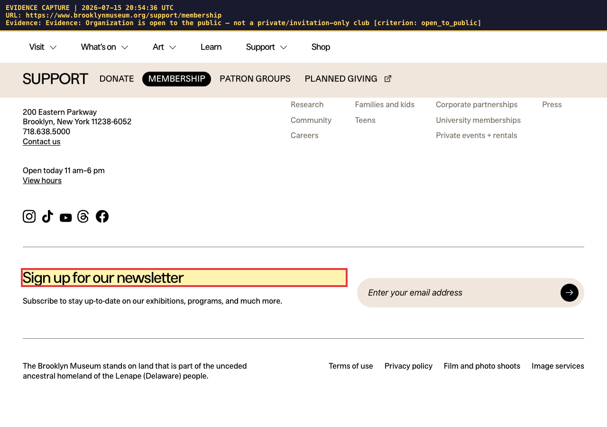
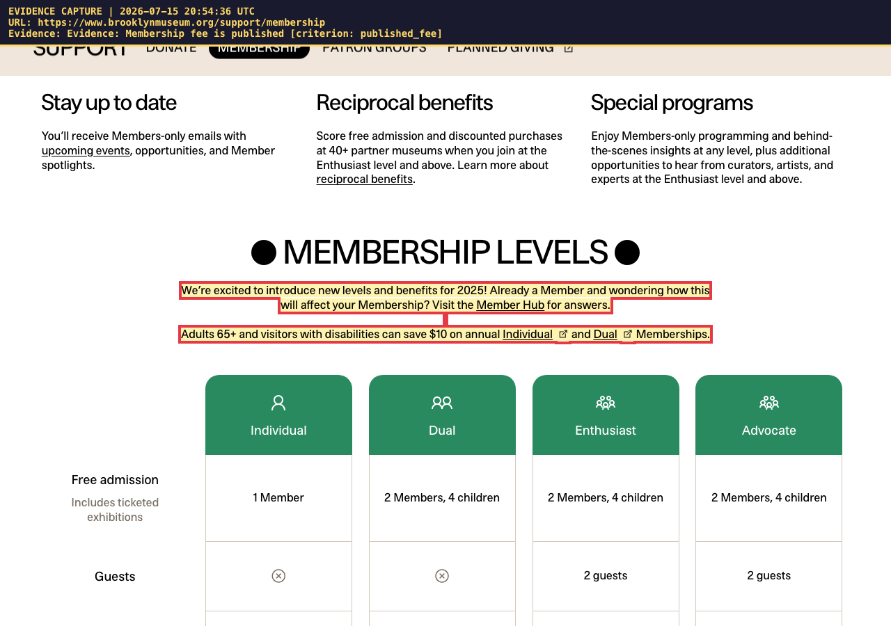
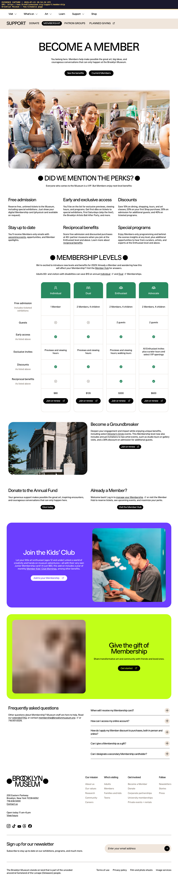
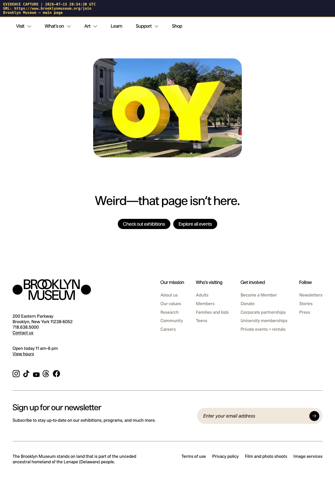

This report was produced by an automated review assistant on 2026-07-15 20:54 UTC. It gathers public-website evidence only. A human reviewer makes the final approve/deny decision.
| Participant | Miriam T. (age 35) |
| Category | Membership |
| Requested | Individual Membership |
| Provider / Vendor | Brooklyn Museum |
| Website / link | https://www.brooklynmuseum.org/join |
| Fee stated on form | membership fee (amount): $80.00 |
| Review date | 2026-07-15 20:54 UTC |
| Fee on application | Fee found on website | Verdict |
|---|---|---|
| membership fee (amount): $80.00 | $10 | differs |
Automated rule-based check of Brooklyn Museum's website found 2 of 3 website-verifiable items, with 0 needing manual review. No AI model was used for this review — a human should double-check any 'Needs Review' items before deciding.
| Status | Criterion | What the website shows | Evidence |
|---|---|---|---|
| ✅ Found | Organization is open to the public — not a private/invitation-only club | The page shows public access ('sign up'). | https://www.brooklynmuseum.org/support/membershipevidence/evidence-open-to-public-evidence-organization-is-open-to-the-pub.png |
| ✅ Found | Membership fee is published | A published price was found on the page: $10. | https://www.brooklynmuseum.org/support/membershipevidence/evidence-published-fee-evidence-membership-fee-is-published.png |
| ❌ Not Found | Fee-match: published membership fee is consistent with the fee on the form (yearly/monthly) | The website price ($10) differs from the fee on the form ($80). | — |
| 🏢 Internal — not website-verifiable | Memberships are approved in the participant's budget | Depends on internal records (budget / Life Plan / documents) — not checkable from the public web. | — |
| 🏢 Internal — not website-verifiable | Membership relates to a goal in the participant's Life Plan | Depends on internal records (budget / Life Plan / documents) — not checkable from the public web. | — |
All captures are date-stamped with the capture time (UTC) and URL burned into the image.
evidence-open-to-public-evidence-organization-is-open-to-the-pub.png

evidence-published-fee-evidence-membership-fee-is-published.png

fullpage-brooklyn-museum-fee-schedule-page.png (whole-page record)

fullpage-brooklyn-museum-main-page.png (whole-page record)
